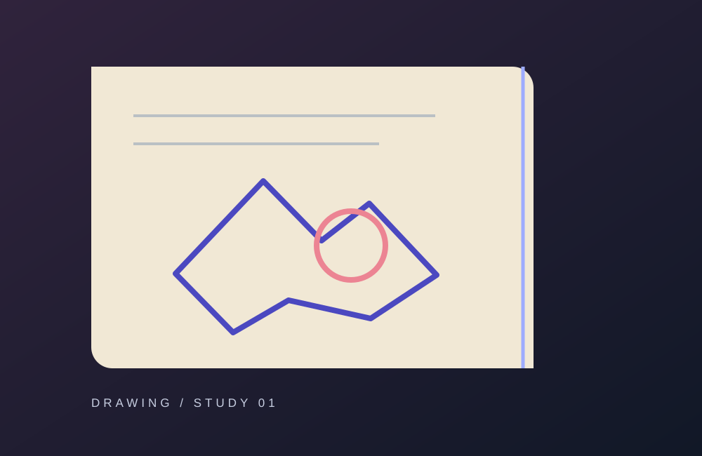

Desktop application
Kömür
A calm cat that lives on your desktop and notices what you are doing: Turkish chat, local AI, voice and everyday help.
Project and downloadsSTUDENT PORTFOLIO · ANTALYA, TR
ONUR CAN ORHAN / PORTFOLIO 2026
Every line of code is the beginning of a new world.
Onur Can Orhan · Computer Programming student · Aspiring game developer
CODE × CREATIVITY
Onur Can Orhan Computer Programming Student | Aspiring Game Developer Exploring the intersection of technology and creativity. Currently learning Python and CSS, with the goal of developing my own video games.
01 / SELECTED WORK
Games, experiments and visual explorations
from my learning journey.
Desktop application
A calm cat that lives on your desktop and notices what you are doing: Turkish chat, local AI, voice and everyday help.
Project and downloads
Game
A playable space-themed browser game built with HTML5 Canvas and JavaScript.
Play Game
Graphic Design
Example project card exploring animation principles and type.

Graphic Design
Example project card exploring layers and color harmony.
02 / VISUAL JOURNAL

An abstract study inspired by drawing and sketchbook practice.

An abstract study inspired by drawing and sketchbook practice.

An abstract study inspired by drawing and sketchbook practice.
LEARN / BUILD / SHARE
Semantic HTML, responsive CSS and accessible interactions.
Small browser experiments with JavaScript and Canvas.
Learning through examples of typography, layers and colour.